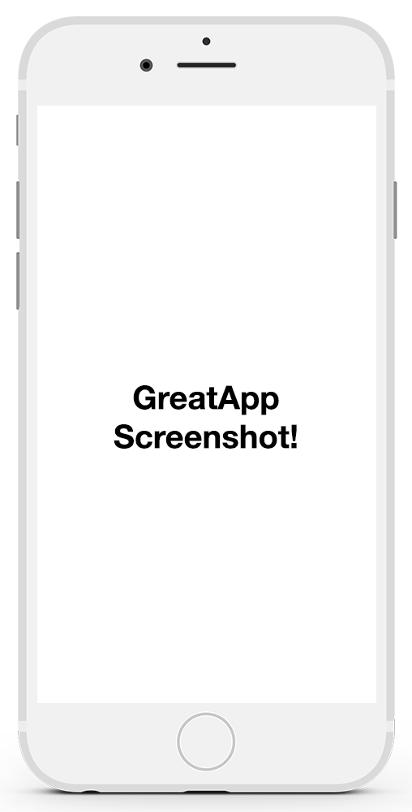

My Great App
Home
Download
My Great App
You have to download this because X, Y or Z
Download Now

Another CTA!
Share your top scores with us on
twitter
for a chance to win this
Great Prize
Get on iOS